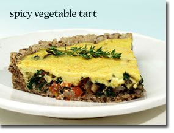

The World's Healthiest Foods are health-promoting foods that can change your life.
The World's Healthiest Foods are health-promoting foods that can change your life.
Try our WHFoods Meal Plan.
The World's Healthiest Foods are health-promoting foods that can change your life.
Try our WHFoods Meal Plan.
|  |
Prep and Cook Time: Prep time: 35 minutes; Bake time: 25 minutes
Ingredients:
|
Directions:
Introduction to Recipe Rating System Chart
In order to better help you identify recipes that feature a high concentration of nutrients for the calories they contain, we created a Recipe Rating System. This system allows us to highlight the recipes that are especially rich in particular nutrients. The following chart shows the nutrients for which Spicy Vegetable Tart is either an excellent, very good, or good source (below the chart you will find a table that explains these qualifications). If a nutrient is not listed in the chart, it does not necessarily mean that the recipe doesn't contain it. It simply means that the nutrient is not provided in a sufficient amount or concentration to meet our rating criteria. (To view this recipe's in-depth nutritional profile that includes values for dozens of nutrients - not just the ones rated as excellent, very good, or good - please use the link below the chart.) To read this chart accurately, you'll need to glance back up to see the ingredients used in the recipe and the number of serving sizes provided by the recipe. Our nutrient ratings are based on a single serving. For example, if a recipe makes 4 servings, you would be receiving the nutrient amounts listed in the chart by eating 1/4th of the combined ingredients found in the recipe. Now, returning to the chart itself, you can look next to the nutrient name in order to find the nutrient amount it offers, the percent Daily Value (DV%) that this amount represents, the nutrient density that we calculated for this recipe and nutrient, and the rating we established in our rating system. For most of our nutrient ratings, we adopted the government standards for food labeling that are found in the U.S. Food and Drug Administration's "Reference Values for Nutrition Labeling." Read more background information and details of our rating system.Spicy Vegetable Tart
1.00 serving 181.93 grams Calories: 272 | ||||
| Nutrient | Amount | DRI/DV (%) | Nutrient Density | World's Healthiest Foods Rating |
|---|---|---|---|---|
| vitamin K | 200.99 mcg | 223 | 14.8 | excellent |
| copper | 0.98 mg | 109 | 7.2 | excellent |
| omega-3 fats | 1.84 g | 77 | 5.1 | excellent |
| manganese | 1.19 mg | 52 | 3.4 | very good |
| selenium | 27.65 mcg | 50 | 3.3 | very good |
| vitamin B1 | 0.57 mg | 48 | 3.1 | good |
| vitamin E | 6.92 mg (ATE) | 46 | 3.0 | good |
| phosphorus | 292.13 mg | 42 | 2.8 | good |
| pantothenic acid | 2.07 mg | 41 | 2.7 | good |
| magnesium | 143.64 mg | 34 | 2.3 | good |
| vitamin B2 | 0.43 mg | 33 | 2.2 | good |
| protein | 13.22 g | 26 | 1.7 | good |
| vitamin B6 | 0.38 mg | 22 | 1.5 | good |
| World's Healthiest Foods Rating | Rule |
|---|---|
| excellent |
DRI/DV>=75% OR Density>=7.6 AND DRI/DV>=10% |
| very good |
DRI/DV>=50% OR Density>=3.4 AND DRI/DV>=5% |
| good |
DRI/DV>=25% OR Density>=1.5 AND DRI/DV>=2.5% |
In-Depth Nutritional Profile for Spicy Vegetable Tart